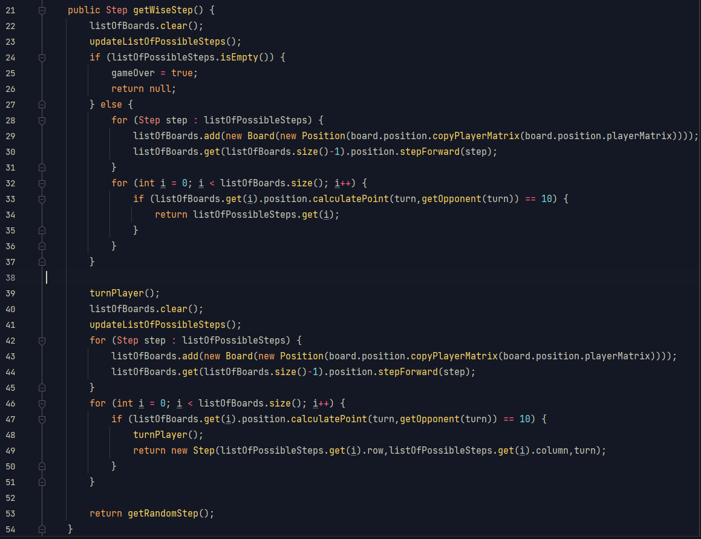

Amőba
Kicsit sárgább, kicsit savanyúbb, de a mienk. Az első OOP kódom :)
- - -
A gép lépésének meghatározása
- Adott a következő hierachia:
- 1) Nyerni egy lépésben, ha lehetséges
- 2) Megakadályozni, hogy nyerjek egy lépésben
- 3) Ha egyik fenti eset sem áll fent, akkor véletlenszerűen lépni.
A program rendelkezik egy, az állást kiértékelő (nyert pozíciót azonosító) algoritmussal. Veszi a szabályos lépéseket, és mindegyikhez hozzárendeli a lépés utáni állást. Ha ezek között nyerőt talál, akkor a gép ezt a lépést fogja lépni. Engem ugyanígy akadályoz meg a nyerésben: "elképzeli", hogy én jövök, és ha meg tudnám nyerni egy lépésben a játékot, akkor azt a lépést megtéve húzza keresztül a számításomat.
